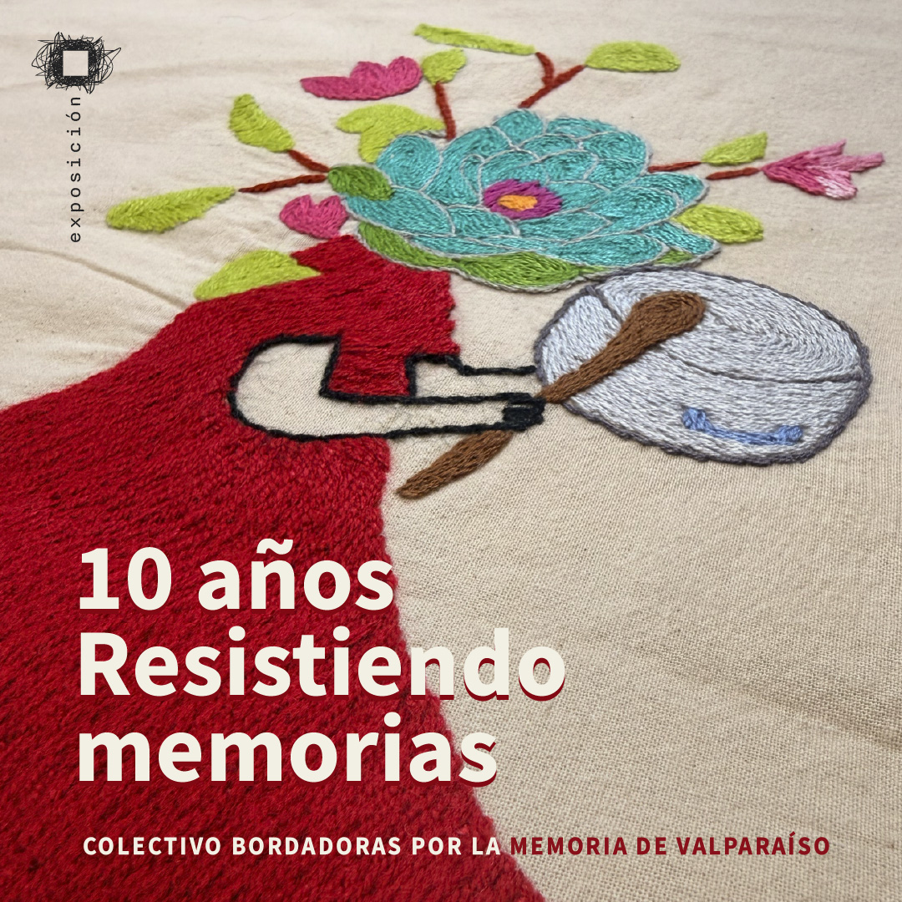

En el año 2016, un grupo de mujeres luchadoras populares fue convocado a un Taller en el Parque Cultural de Valparaíso denominado Bordando Memoria. Fueron 5 meses en los que se entretejieron compromisos de lucha y de resistencia, donde compañeras de 3 y 4 Álamos montaron una exposición itinerante en la que mostraban las actividades artesanales de sobrevivencia que desarrollaron mientras estaban en prisión. Los primeros trabajos fueron blusas confeccionadas y bordadas por ellas; luego, el tapiz denominado histórico; y después se bordaron pañuelos con el nombre de luchadoras y luchadores caídos. Tiempo después se formó el colectivo Bordadoras por la Memoria.
VER MÁS
En estos 10 años han recorrido la dolorosa historia que dejó el paso sangriento de la dictadura, bordando con hilos multicolores la lucha y la esperanza, dando puntadas colectivas entre mujeres para: denunciar; no olvidar; mantener la memoria viva y rendir homenaje a compañeras como Marta Ugarte, a las compañeras detenidas desaparecidas embarazadas y a los compañeros detenidos...

1º nivel del Edificio de la Ex Galería de Reos
Calle Cumming 590, Cerro Cárcel